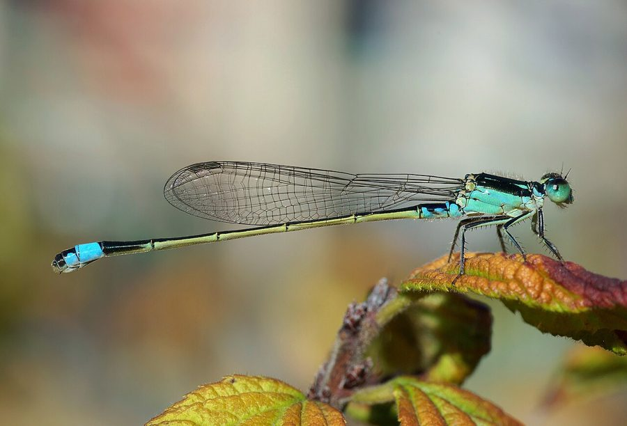

सेनेगल गोल्डन डार्टलेटSenegal Golden Dartlet
Ischnura senegalensis · Coenagrionidae · INS-0142

- Scientific name वैज्ञानिक नाम
- Ischnura senegalensis (Rambur, 1842)
- Family कुल
- Coenagrionidae
- Hindi हिंदी
- सेनेगल गोल्डन डार्टलेट
- Local names स्थानीय नाम
- senegal golden dartlet, dartlet
- Status here यहाँ की स्थिति
- native
- Movement आवागमन
- Resident, here all year
- Known from कहाँ दर्ज
- Others have published records from the wider Awadh–Purvanchal plain, none yet from Basti–Ayodhya अवध–पूर्वांचल से दूसरों के प्रकाशित अभिलेख, बस्ती–अयोध्या से अभी नहीं
- IUCN IUCN
- not evaluated
- Review समीक्षा
- audited and independently read
When to look कब देखें
Present all year. साल भर मौजूद।
Tell it apart from इनसे अलग पहचानें
सेनेगल गोल्डन डार्टलेट / Senegal Golden Dartlet
Ischnura senegalensis (Rambur, 1842) — Coenagrionidae
सेनेगल गोल्डन डार्टलेट — एक छोटी, पतली सूतिका कीट जिसके नर का शरीर चमकीले पीले-नारंगी और काले रंग में सजा होता है, जबकि मादा हरी या भूरी होती है। यह दलदलों और उथले जलाशयों के किनारों पर रहती है जहाँ जलीय पौधों की बहुतायत हो। इसे छोटे उड़नशील कीटों का शिकारी माना जाता है।
Quick Identification त्वरित पहचान
| Feature | Description |
|---|---|
| Size | Small, slender (body 24–28 mm; wingspan 28–32 mm) |
| Build | Delicate damselfly; wings held closed along body at rest |
| Male colour | Bright orange-yellow to citron-yellow thorax and abdomen with black bands |
| Female colour | Polymorphic: green, yellow-brown, or orange forms; darker markings |
| Eyes | Small, widely separated on head sides |
| Behaviour | Weak, fluttering flight; perches frequently on plants |
Field tip: Look for a small, bright yellow-orange damselfly (if male) hovering over shallow vegetation-rich water bodies. The striking yellow-orange colour with black rings distinguishes males immediately. Females are more variable and harder to identify.
Morphology आकारिकी
Biometrics:
| Measurement | Range |
|---|---|
| Body length | 24–28 mm |
| Hindwing length | 14–16 mm |
| Wing span | 28–32 mm |
Adult male: Head and thorax bright citron-yellow with a black mid-dorsal stripe and lateral stripes. Eyes black. Abdomen predominantly yellow-orange with black bands and rings at each segment. Wings transparent, sometimes with yellow tinting at base. Extremely slender build.
Adult female: Highly polymorphic; three distinct colour forms occur. One form (andromorph) resembles males in yellow and orange. Another (heteromorph 1) is greenish-yellow. A third (heteromorph 2) is dull olive-brown. All have darker markings on the thorax and abdomen. This polymorphism may be maintained by sexual selection and competition among females.
Damselfly characters: Wings held closed; eyes widely separated; body very slender.
Behaviour & Ecology व्यवहार और पारिस्थितिकी
Ischnura senegalensis is a small, highly adaptable damselfly of shallow, vegetation-rich freshwater habitats. It is a generalist species, found in a wide variety of wetlands from temporary ponds to permanent marshes and canals. The species is highly tolerant of disturbance, pollution, and habitat degradation compared to many damselflies, and it is often one of the first odonates to colonize newly created or recovering water bodies.
Males are territorial, perching on vegetation and pursuing other males and hunting insects. Females are more retiring, remaining among the plants. The species shows weak, fluttering flight close to the water surface. It feeds on tiny flying insects, particularly small dipterans and other insects near the water surface.
The female polymorphism is thought to represent a frequency-dependent sexual selection system, where the rarest female form experiences reduced harassment from males.
Larval Stage
Naiads are slender, brown to greenish, and highly adapted to slow-moving water and muddy substrates. They hide among submerged vegetation or on bottom mud. Larval duration is approximately 10–12 weeks. Emergence occurs year-round, with peaks during warm months.
Life Cycle / Phenology जीवन चक्र
| Stage / Season | Event |
|---|---|
| Egg (4–6 days) | Laid endophytically in plant tissues |
| Naiad (10–12 weeks) | Among weeds or on bottom mud |
| Emergence (year-round) | Peaks March–May and September–November |
| Adult (2–3 weeks) | Territorial perching; pair formation and oviposition |
| Seasonality | Present year-round; activity peaks in spring and post-monsoon |
Host Plants or Prey आहार
Adult prey:
- Small midges and gnats
- Mosquitoes (including Culex, Anopheles larvae eaten by naiads)
- Tiny flies and aphids
Larval prey:
- Mosquito larvae
- Small crustaceans (Daphnia, copepods)
- Small aquatic worms
Predators / Natural Enemies शत्रु
- Birds: Warblers, flycatchers, swallows
- Fish: Small fish fry and larger fish species
- Spiders: Tetragnathid and jumping spiders
- Larger insects: Dragonfly naiads; robber flies
Agricultural / Human Relevance कृषि प्रासंगिकता
The Senegal Golden Dartlet is not documented as a pest. It feeds on small flying insects, including mosquitoes, and may help reduce mosquito populations in agricultural areas with irrigation canals and ponds. Its high tolerance for habitat degradation makes it a "generalist indicator": its presence indicates that a water body is not extremely heavily polluted but also does not confirm pristine conditions (unlike more sensitive damselfly species).
Expected Locally स्थानीय रूप से अपेक्षित
Not a field record. Written from published accounts for eastern Uttar Pradesh. No confirmed local sighting yet — if you have seen it, that is what the atlas needs.
अभी तक स्थानीय पुष्टि नहीं। यह विवरण प्रकाशित स्रोतों से है, किसी अवलोकन से नहीं।
GBIF holds published records from the wider Awadh–Purvanchal plain, none yet from Basti–Ayodhya. The species is expected throughout eastern UP in shallow ponds, ditches, and canal margins with dense vegetation, year-round. Look for the bright yellow-orange damselfly (if male) perching on water plants in early morning. A photograph showing the distinctive yellow-orange coloration and size, with date and location, would confirm a local record.
Distribution वितरण
Global range: Tropical Africa and Asia, from Senegal across Africa to South Asia, Southeast Asia, and Australia. One of the most widespread damselfly species.
In India: Common throughout the country, particularly in plains.
In Uttar Pradesh: Recorded widely in wetland systems.
In Basti district / eastern UP: Expected in all suitable wetlands; likely common but unconfirmed locally.
Research Questions शोध प्रश्न
Anyone can investigate these | कोई भी इन प्रश्नों की जाँच कर सकता है
- Why do females of Ischnura senegalensis come in three colour forms? — Capture and measure multiple females; compare in the field; record mating success by colour.
- How many small insects can a single adult catch per hour? — Observe feeding behavior; count successful capture events.
- क्या यह प्रजाति प्रदूषित जल में अन्य सूतिका कीटों से अधिक सहन कर सकती है? (Does this species tolerate polluted water better than other damselflies?) — Compare populations in clean vs. moderately polluted water bodies.
- What is the larval development time in irrigation canals vs. natural ponds? — Rear naiads from different sources; time to emergence.
- How does habitat modification (vegetation removal, water level changes) affect population size? — Monitor the same water body through seasons of environmental change.
Similar Species मिलती-जुलती प्रजातियाँ
| Species | Key Difference | हिंदी | |
|---|---|---|---|
| [[blue_dartlet\ | Blue Dartlet]] (Pseudagrion microcephalum) | Much smaller body; blue coloration; different thorax pattern | नीली व्याधपतंग |
| Agriocnemis pygmaea | Tiny (18–22 mm); metallic blue; much smaller | बहुत छोटी व्याधपतंग | |
| Ceriagrion coromandelianum | Bright red, not yellow-orange; longer body | लाल व्याधपतंग |
Field rule: Small damselfly with bright yellow-orange head and thorax (male) or polymorphic females (yellow, green, or brown forms), in shallow vegetation-rich water.
Taxonomy & Classification वर्गीकरण
Original description. Rambur described this species in 1842 in Histoire Naturelle des Insectes. Névroptères, page 256, as Agrion senegalense. Type locality: Senegal, Africa. The genus Ischnura was erected by Charpentier in 1840.
Subspecies. The African and Asian populations are sometimes considered distinct subspecies; the Asian form is I. senegalensis.
Family and order placement. Order Odonata, suborder Zygoptera, family Coenagrionidae. One of the most widespread coenagrionids globally.
Phylogenetic notes. Ischnura is a pantropical genus with high diversity in Africa. I. senegalensis is one of the most successful and adaptable damselfly species, likely benefiting from human habitat modification that creates temporary and semi-permanent ponds.
IUCN status rationale. Listed as Least Concern (LC). The species has a massive global range and very stable, increasing populations.
Photo Gallery फोटो गैलरी
No photos yet — add field photos to media/species/senegal_golden_dartlet/ and run node scripts/sync_photos.js.
Photos needed आवश्यक फोटो
- [ ] Male with bright yellow-orange coloration, at rest
- [ ] Tandem pair ovipositing
- [ ] Different female colour forms (to show polymorphism)
References संदर्भ
- Rambur, M.P. (1842). Histoire Naturelle des Insectes. Névroptères. Roret, Paris, p. 256. [original description]
- Fraser, F.C. (1933). The Fauna of British India, including Ceylon and Burma. Odonata, Vol. 1. Taylor & Francis, London.
- Subramanian, K.A. (2005). Dragonflies and Damselflies of Peninsular India — A Photographic Guide. Vigyan Prasar, New Delhi.
- Norling, U. & Sahlén, G. (1997). Odonata — dragonflies and damselflies. In: Nilsson, A.N. (ed.), Aquatic Insects of North Europe — a Taxonomic Handbook, Vol. 2. Apollo Books, Stenstrup.
- IUCN SSC Odonata Specialist Group. (2024). Ischnura senegalensis. IUCN Red List of Threatened Species. Ver. 2024.
- GBIF Occurrence Data — Ischnura senegalensis, Asia (2010–2025).
Source file: species/fauna/insects/senegal_golden_dartlet.md